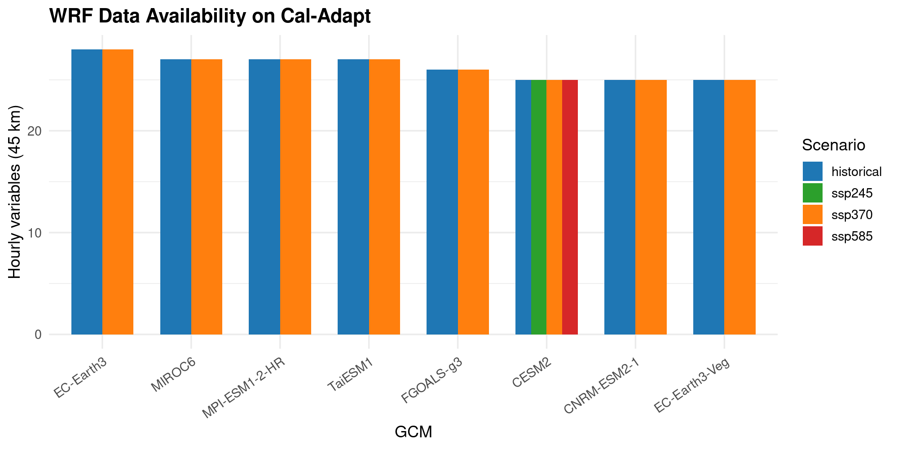
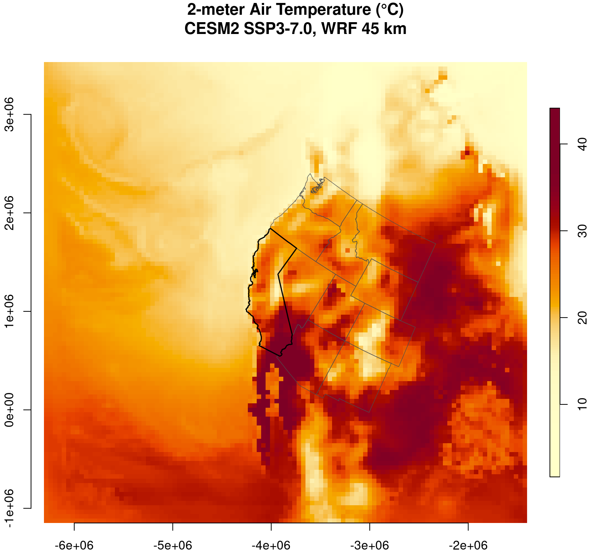
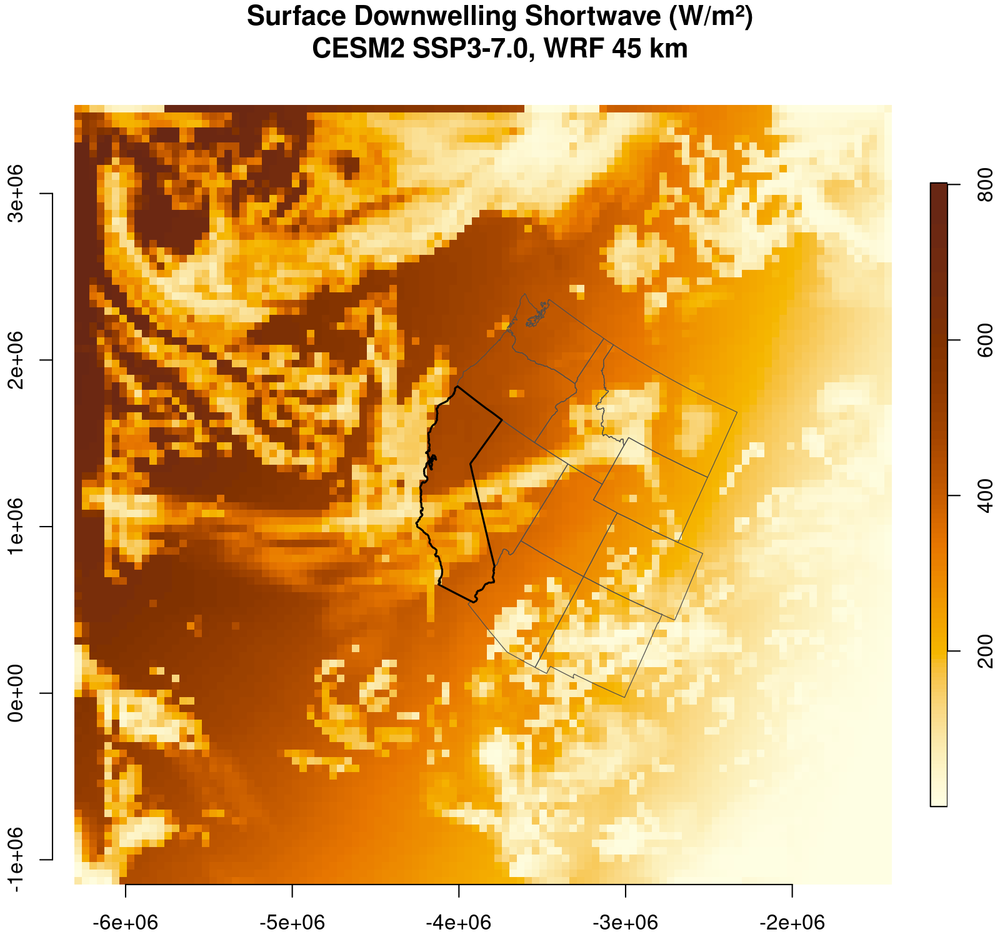
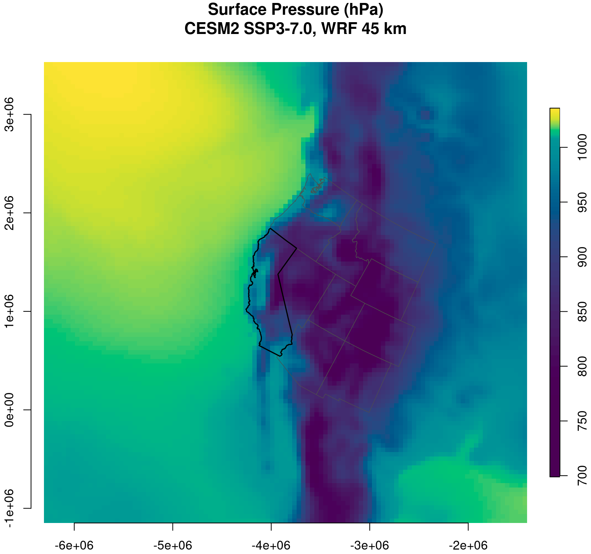
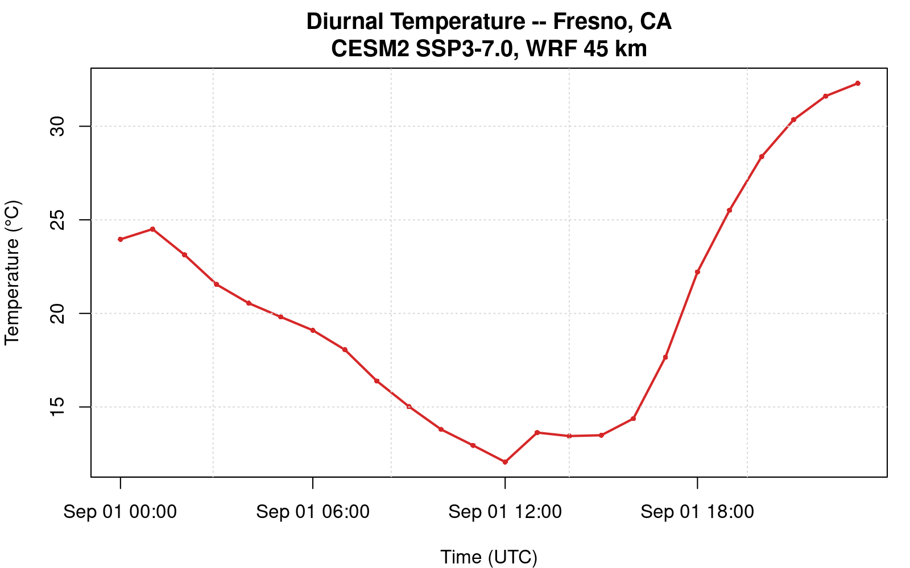
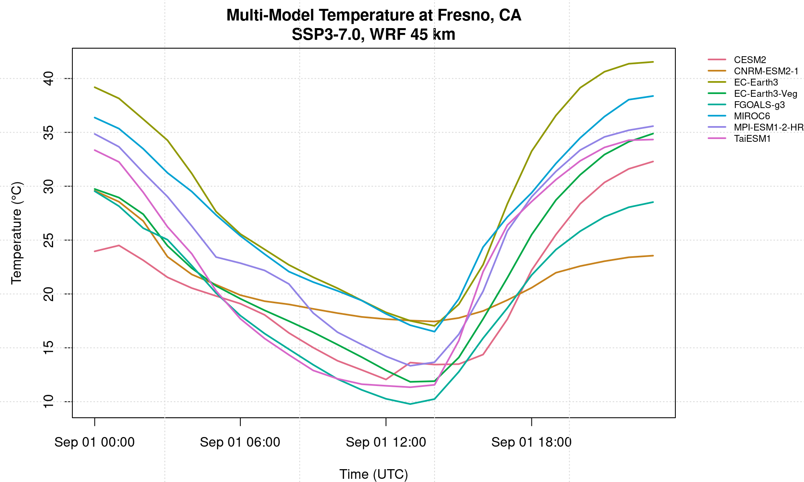

library(caladaptaer)
library(stars)
library(sf)
library(ggplot2)
library(maps)Getting Started with caladaptaer
What you will learn
- What climate data is available on the Cal-Adapt Analytics Engine and how the CADCAT catalog organizes it
- How to query the catalog to find datasets by model, scenario, variable, and resolution
- How to read gridded Zarr data from AWS S3 directly into R as a
starsobject - How to produce California climate maps comparable to the official Python notebooks
- How to extract and visualize time series at specific locations
The Cal-Adapt Analytics Engine
The Cal-Adapt Analytics Engine hosts roughly 1 PB of downscaled CMIP6 climate projections for California and the western US, produced for the state’s Fifth Climate Change Assessment. The data lives in cloud-optimized Zarr stores on AWS S3, publicly accessible with no credentials required.
Two downscaling products are available:
WRF CMIP6 (WUS-D3) – dynamically downscaled by UCLA’s Center for Climate Science (Rahimi et al. 2024). The Weather Research and Forecasting model produces hourly output at three nested resolutions: 45 km (d01, western US), 9 km (d02, California + surroundings), and 3 km (d03, California). Eight GCMs are downscaled, primarily under SSP3-7.0, with CESM2 also available for SSP2-4.5 and SSP5-8.5. The WRF output includes the full surface meteorology – temperature, pressure, precipitation, humidity, radiation, and wind components.
LOCA2-Hybrid – statistically downscaled by Scripps/UCSD (Pierce et al.). Daily output at 3 km for 15 GCMs across three SSPs (SSP2-4.5, SSP3-7.0, SSP5-8.5), covering 1950–2100. LOCA2-Hybrid uses a hybrid analog approach that substitutes WRF-derived weather patterns for end-of-century conditions where the historical analog library runs thin.
The official Python interface is climakitae. caladaptaer provides the same data access natively in R, reading Zarr stores via GDAL’s /vsis3/ virtual filesystem. No Python, no API key, no authentication.
Setup
Check that GDAL supports Zarr (version 3.4+):
sf::sf_extSoftVersion()["GDAL"]Exploring the catalog
The CADCAT catalog is a CSV index of every Zarr store on S3. Each row is one variable from one model/scenario/resolution combination. cae_catalog() downloads the table once per session and caches it.
cat <- cae_catalog()
nrow(cat)
names(cat)The catalog follows CMIP6 naming conventions:
| Column | Description | Examples |
|---|---|---|
activity_id |
Downscaling method | WRF, LOCA2 |
source_id |
Parent GCM | CESM2, MIROC6, EC-Earth3 |
experiment_id |
Scenario | ssp370, ssp245, historical |
table_id |
Temporal resolution | 1hr, day, mon |
variable_id |
Variable short name | t2, prec, pr, tasmax |
grid_label |
Spatial resolution | d01 (45 km), d02 (9 km), d03 (3 km) |
member_id |
Ensemble member | r1i1p1f1 |
path |
S3 Zarr store path | s3://cadcat/wrf/ucla/cesm2/… |
Data availability
The WRF and LOCA2 datasets differ in their model/scenario coverage. Use the convenience functions to see what’s available:
# WRF GCMs -- 8 models dynamically downscaled
cae_models(activity = "WRF")
# LOCA2 GCMs -- 15 models statistically downscaled
cae_models(activity = "LOCA2")
# CESM2 has the broadest scenario coverage in WRF
cae_scenarios(activity = "WRF", model = "CESM2")
# hourly WRF variables
cae_variables(activity = "WRF", timescale = "1hr")Here’s the full picture of what’s on S3 for the WRF hourly data at 45 km:

WRF vs LOCA2 – when to use which
Use WRF when you need hourly data, process-based meteorology (radiation, humidity, pressure), or when you care about mesoscale features like orographic precipitation or sea breeze effects. Use LOCA2 when you need more GCMs, more SSPs, or daily temperature/precipitation extremes at the finest available resolution (3 km).
Searching the catalog
cae_search() filters by any combination of fields. All filters are ANDed.
# all hourly CESM2 temperature at 45 km
cae_search(activity = "WRF", model = "CESM2",
variable = "t2", timescale = "1hr", resolution = "d01")Fetching gridded data
cae_fetch() reads a Zarr store from S3 and returns a stars object. Start with n_timesteps = 1 to keep the initial read small – a single 45 km timestep is about 0.3 MB.
t2 <- cae_fetch("t2", model = "CESM2", scenario = "ssp370",
n_timesteps = 1)
t2The result has three dimensions: x and y in the WRF Lambert Conformal Conic projection, and time in UTC. The values are 2-meter air temperature in Kelvin.
Mapping temperature over the western US
The 45 km WRF domain covers most of western North America. Overlay state boundaries to orient the map – this is the R equivalent of what the Cal-Adapt Python notebooks do with cartopy.
# state boundaries for overlay
ca_sf <- st_as_sf(map("state", "california", plot = FALSE, fill = TRUE))
western_sf <- st_as_sf(
map("state", c("california", "oregon", "washington", "nevada",
"arizona", "utah", "idaho", "montana", "wyoming",
"colorado", "new mexico"), plot = FALSE, fill = TRUE)
)
# transform boundaries to the WRF projection
ca_wrf <- st_transform(ca_sf, st_crs(t2))
ws_wrf <- st_transform(western_sf, st_crs(t2))
# convert to Celsius and plot
t2_c <- t2
t2_c[[1]] <- units::drop_units(t2[[1]]) - 273.15
plot(t2_c, main = "", axes = TRUE, reset = FALSE,
col = hcl.colors(100, "YlOrRd", rev = TRUE),
key.pos = 4, key.width = lcm(1.5), key.length = 0.8)
plot(st_geometry(ws_wrf), add = TRUE, border = "grey30", lwd = 0.6)
plot(st_geometry(ca_wrf), add = TRUE, border = "black", lwd = 1.5)
title("2-meter Air Temperature (C)\nCESM2 SSP3-7.0, WRF 45 km")
Shortwave radiation
Surface downwelling shortwave radiation drives photosynthesis in ecosystem models and solar generation in energy applications. The WRF field captures the diurnal solar cycle and cloud effects:
sw <- cae_fetch("swdnb", model = "CESM2", scenario = "ssp370",
n_timesteps = 1)
Surface pressure
Surface pressure is a required input for ecosystem models and reveals the topographic structure of the domain:
psfc <- cae_fetch("psfc", model = "CESM2", scenario = "ssp370",
n_timesteps = 1)
Point extraction
For single-site analysis, cae_fetch_point() reads the grid and extracts the time series at the nearest grid cell to a lon/lat coordinate. CRS transformation from WGS84 to the WRF Lambert grid is handled automatically.
# 24 hours of temperature at Fresno, CA
ts <- cae_fetch_point("t2", model = "CESM2", scenario = "ssp370",
lon = -119.77, lat = 36.75,
n_timesteps = 24)
head(ts)ts$temp_c <- ts$value - 273.15
plot(ts$time, ts$temp_c, type = "l", lwd = 2, col = "#D62728",
xlab = "Time (UTC)", ylab = "Temperature (C)",
main = "Diurnal Temperature -- Fresno, CA")
points(ts$time, ts$temp_c, pch = 16, cex = 0.6, col = "#D62728")
grid(col = "grey85")
Multi-model comparison
One of the strengths of the Cal-Adapt dataset is that multiple GCMs are available under the same downscaling framework. Comparing models at the same location reveals inter-model spread – a measure of structural uncertainty in the projections.
# get all WRF models with SSP3-7.0 (excluding ERA5 reanalysis)
wrf_models <- setdiff(cae_models(activity = "WRF"), "ERA5")
models_370 <- character(0)
for (m in wrf_models) {
if ("ssp370" %in% cae_scenarios(activity = "WRF", model = m))
models_370 <- c(models_370, m)
}
# extract 24-hour temperature at Fresno from each model
model_ts <- lapply(models_370, function(m) {
d <- cae_fetch_point("t2", model = m, scenario = "ssp370",
lon = -119.77, lat = 36.75, n_timesteps = 24)
d$model <- m
d$temp_c <- d$value - 273.15
d
})
model_ts <- do.call(rbind, model_ts)
Multiple meteorological variables
Ecosystem models and energy system models typically need several meteorological inputs. The WRF hourly dataset includes the full surface meteorology. Here we extract all 7 SIPNET-required variables at a point:
| WRF name | Description | Units |
|---|---|---|
t2 |
2-meter air temperature | K |
psfc |
Surface pressure | Pa |
prec |
Accumulated precipitation | mm/timestep |
q2 |
Water vapor mixing ratio | kg/kg |
swdnb |
Downward shortwave radiation | W/m2 |
u10 |
10-meter eastward wind | m/s |
v10 |
10-meter northward wind | m/s |
vars <- c("t2", "swdnb", "prec", "q2", "psfc", "u10", "v10")
pts <- lapply(vars, function(v) {
cae_fetch_point(v, model = "CESM2", scenario = "ssp370",
lon = -119.77, lat = 36.75, n_timesteps = 24)
})
names(pts) <- vars
What’s next
Writing CF-standard NetCDF: See the SIPNET Met Drivers vignette for the full pipeline from raw WRF variables to CF-compliant met files.
LOCA2 daily data: The same
cae_fetch()interface works for LOCA2 – just specifytimescale = "day"and a LOCA2 model name (e.g."EC-Earth3").Spatial subsetting: For California-only analysis at 9 or 3 km, use
resolution = "d02"or"d03", but watch memory – a single 3 km timestep is ~150 MB.
Requirements
- R >= 4.1 (native pipe support)
- GDAL >= 3.4 (Zarr driver). Check with
sf::sf_extSoftVersion(). - Internet access to AWS S3 (us-west-2 region). No authentication.
- Memory: The 45 km grid is 199 x 199. One timestep is ~0.3 MB. A full year for one variable is ~2.6 GB.
References
- Rahimi, S. et al. (2024). An overview of the Western United States Dynamically Downscaled Dataset (WUS-D3). Geoscientific Model Development, 17, 2265–2286. doi:10.5194/gmd-17-2265-2024
- Pierce, D. W. et al. Statistical downscaling using Localized Constructed Analogs (LOCA). Journal of Hydrometeorology, 15(6), 2558–2585.
- Krantz, W. et al. (2022). GCM skill evaluation for the Fifth California Climate Assessment.
- Cal-Adapt Analytics Engine: https://analytics.cal-adapt.org/
- CADCAT on AWS: https://registry.opendata.aws/caladapt-coproduced-climate-data/